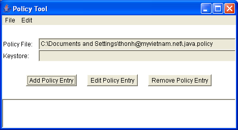
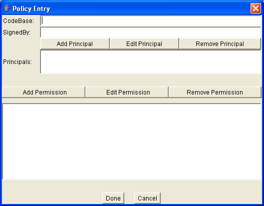
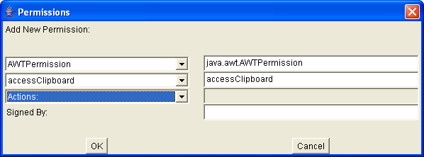
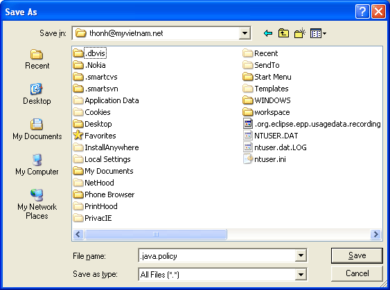

Create file .java.policy into user.home (if you have no file user.home\.java.policy) by the way:
Step 1: Open file "C:\Java\jdk1.5.0_12\bin \policytool.exe".
Step 2: Click "Add Policy Entry".

Step 3: Click "Add Permission".

Step 4: Config same below picture

Step 5: Click "OK", click "Done"
Step 6: Choose File -> Save As
Step 7: Type file name: ".java.policy"

Edit file .java.policy into user.home (if you have a file user.home\.java.policy) following:
grant {
...
permission java.awt.AWTPermission "accessClipboard"; //this row is added
};
If you want to set for all users, you should edit file .java.policy following:
Open file .java.policy as a text file
The system policy file is by default located at java.home/jre/lib/security/.java.policy (Solaris) java.home\jre\lib\security\.java.policy (Win32) or jre.home/lib/security/.java.policy (Solaris) jre.home\lib\security\.java.policy (Win32)
Add a row "permission java.awt.AWTPermission "accessClipboard";" into .java.policy